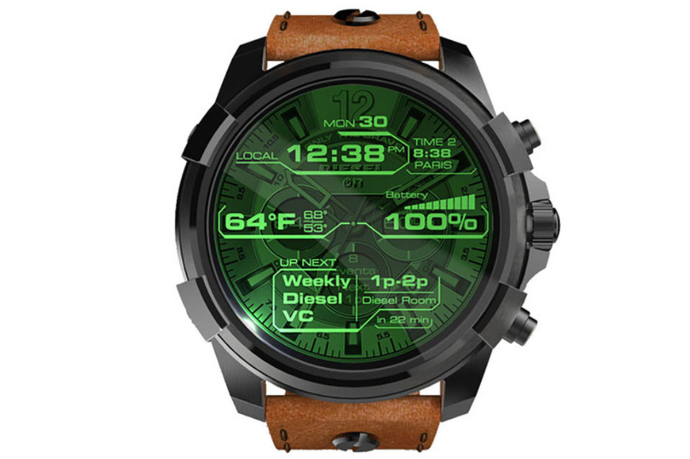

When using our watches you wont be able to stop time in certain places like banks, police stanions and other federal buildings.
Most of our watches come with a basic design, with a push of a button on the watch will stop time for only 30 minute at a time and will need at least 15 minute to cool down before using again.